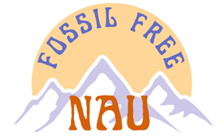

FFNAU is a student-based organization working with NAU staff, faculty, students, alumni, and community members of Flagstaff towards the goal of the NAU Foundation Board divesting from the fossil fuel industry. Our endowment, which is an investment account that exists for the sole purpose of supporting NAU, is worth around $200 million. This money is invested across a broad range of industries and sectors, including the fossil fuel industry. We believe it’s wrong for NAU to remain a shareholder in the fossil fuel industry while actively pursing a Climate Action Plan that calls for carbon neutral operations by 2030. It’s time for NAU to be true to our values of environmental stewardship and divest from fossil fuels!
Divestment is the opposite of investment. It means to pull invested money out of companies like Shell, ExxonMobil, and Chevron. These companies profit by exploiting natural resources and selling products that accelerate climate change. If we agree that climate change is doing harm all around the world, then it’s wrong for us to profit off companies that continue to expand the fossil fuel economy. The divestment movement calls for the simple action of removing yourself as a shareholder in fossil fuel companies.
You can support this movement by signing our letter and adding your name to the growing list of students, faculty, staff, alumni and other Flagstaff community members who believe it’s wrong that we profit off the fossil fuel industry.
add problem statement
Learn more about our divestment objectives: